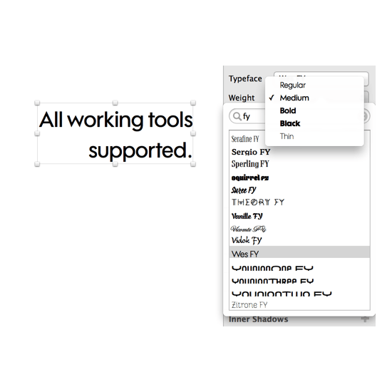

Sync fonts
Product Design, Ux, Ui, Prototyping
A font is never finished until it’s used by the customer. In 2014 I worked with the Fontyou team under the lead of Gregori Vincens to think of a new way to consume and use fonts. The sync app is one of Fontyou’s key components.
This tool had to provide a new experience, but stay in parallel with the Fontyou platform, using the same codes and the same language.
For our application we could manipulate certain UX elements familiar to the user. Here, we placed the list at the center of the user’s experience, differentiating the application from the platform.


